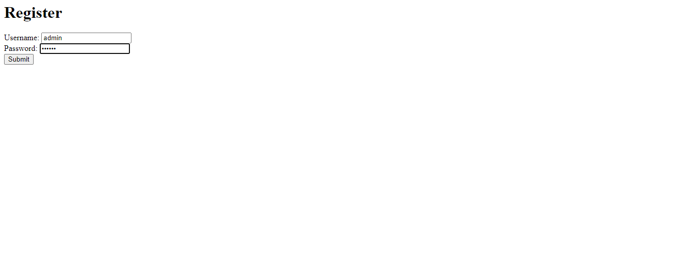
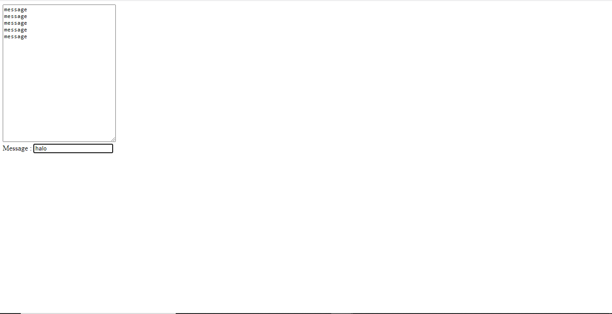

<header>
  <meta charset="utf-8">
  <meta name="viewport" content="width=device-width, initial-scale=1">
  <!-- <link href="https://unpkg.com/tailwindcss@^1.0/dist/tailwind.min.css" rel="stylesheet"> -->
  <link href="https://cdn.jsdelivr.net/npm/daisyui@2.28.0/dist/full.css" rel="stylesheet" type="text/css" />
  <link href="https://cdn.jsdelivr.net/npm/tailwindcss@2.2/dist/tailwind.min.css" rel="stylesheet" type="text/css" />
</header>

<body>
  <!-- Navbar -->
  <div class="navbar bg-gray-900">
    <div class="navbar-start">
      <div class="dropdown  text-white">
        <label tabindex="0" class="btn btn-ghost btn-circle">
          <svg xmlns="http://www.w3.org/2000/svg" class="h-5 w-5" fill="none" viewBox="0 0 24 24" stroke="currentColor">
            <path stroke-linecap="round" stroke-linejoin="round" stroke-width="2" d="M4 6h16M4 12h16M4 18h7" />
          </svg>
        </label>
        <ul tabindex="0" class="menu menu-compact dropdown-content mt-3 p-2 shadow bg-gray-900 rounded-box w-52">
          <li><a href="/Kelompok-5/Nomor 1/Nomor1.html">Server and Client-Server Scripting</a></li>
          <li><a href="/Kelompok-5/Nomor 2/Nomor2.html">PHP Basics</a></li>
          <li><a href="/Kelompok-5/Nomor 3/Nomor3.html">Penerapan Seleksi Kondisi, Looping, Array</a></li>
          <li><a href="/Kelompok-5/Nomor 4/Nomor4.html">Penerapan Materi Terhadap Nilai Konversi Mahasiswa</a></li>
          <li><a href="/Kelompok-5/Nomor 5/Nomor5.html">Uji Coba Source Code</a></li>
          <li><a href="/Kelompok-5/Rangkuman Blade/rangkuman-blade-kelompok-5.html">Rangkuman Blade</a></li>
        </ul>
      </div>
    </div>
    <div class="navbar-center">
      <a class="btn btn-ghost normal-case text-xl text-white" href="/Kelompok-5/index.html">Kelompok 5 Pengembangan
        Aplikasi Web</a>
    </div>
    <div class="navbar-end">
      <a class="normal-case font-semibold text-xl mr-5 text-yellow-300 ">Uji Coba Source Code</a>
    </div>
  </div>
  <!-- Navbar -->

  <div class="p-10 bg-white">
    <div class="max-w-none rounded-xl overflow-hidden shadow-xl bg-gray-900">
      <div class="p-8 mt-4 shadow-xl">
        
        <div class="font-bold text-xl mb-2 mt-4 text-yellow-300">Register dan Login</div>
        <!-- sub text -->
        <div class="text-justify text-white text-base max-w-3xl">
          <p>Penjelasan mengenai pengujian terhadap source code yang ada di dalam power point materi
          <form> Handling slide 18-23 berupa registrasi dan login.
            </p>
            <!-- button -->
            <a href="Register dan Login.html" class="btn btn-ghost btn-xs sm:btn-sm md:btn-md lg:btn-md mt-4 border-yellow-300
            text-white hover:bg-yellow-300">View More</a>
            <!-- button end -->
        </div>
        <!-- sub text -->
      </div>

      <div class="p-8 shadow-xl">
        
        <div class="font-bold text-xl mb-2 mt-4 text-yellow-300">Ajax Chat</div>
        <!-- sub text -->
        <div class="text-justify text-white text-base max-w-3xl">
          <p>Penjelasan mengenai pengujian terhadap source code yang ada di dalam power point materi
          <form> Handling slide 50-56 berupa Ajax Chat.
            </p>
            <!-- button -->
            <a href="ajax chat.html" class="btn btn-ghost btn-xs sm:btn-sm md:btn-md lg:btn-md mt-4 border-yellow-300
            text-white hover:bg-yellow-300">View More</a>
            <!-- button end -->
        </div>
        <!-- sub text -->
      </div>
    </div>
  </div>
</body>

<footer class="footer items-center p-4 bg-gray-900 text-white">
  <div class="items-center grid-flow-col">
    <svg width="36" height="36" viewBox="0 0 24 24" xmlns="https://id.wikipedia.org/wiki/Berkas:Logo_Universitas_Brawijaya.svg#/media/Berkas:Logo_Universitas_Brawijaya.svg" fill-rule="evenodd" clip-rule="evenodd" class="fill-current"><path d="M22.672 15.226l-2.432.811.841 2.515c.33 1.019-.209 2.127-1.23 2.456-1.15.325-2.148-.321-2.463-1.226l-.84-2.518-5.013 1.677.84 2.517c.391 1.203-.434 2.542-1.831 2.542-.88 0-1.601-.564-1.86-1.314l-.842-2.516-2.431.809c-1.135.328-2.145-.317-2.463-1.229-.329-1.018.211-2.127 1.231-2.456l2.432-.809-1.621-4.823-2.432.808c-1.355.384-2.558-.59-2.558-1.839 0-.817.509-1.582 1.327-1.846l2.433-.809-.842-2.515c-.33-1.02.211-2.129 1.232-2.458 1.02-.329 2.13.209 2.461 1.229l.842 2.515 5.011-1.677-.839-2.517c-.403-1.238.484-2.553 1.843-2.553.819 0 1.585.509 1.85 1.326l.841 2.517 2.431-.81c1.02-.33 2.131.211 2.461 1.229.332 1.018-.21 2.126-1.23 2.456l-2.433.809 1.622 4.823 2.433-.809c1.242-.401 2.557.484 2.557 1.838 0 .819-.51 1.583-1.328 1.847m-8.992-6.428l-5.01 1.675 1.619 4.828 5.011-1.674-1.62-4.829z"></path></svg> 
    <p>Universitas Brawijaya © 2022</p>
  </div>  
</footer>